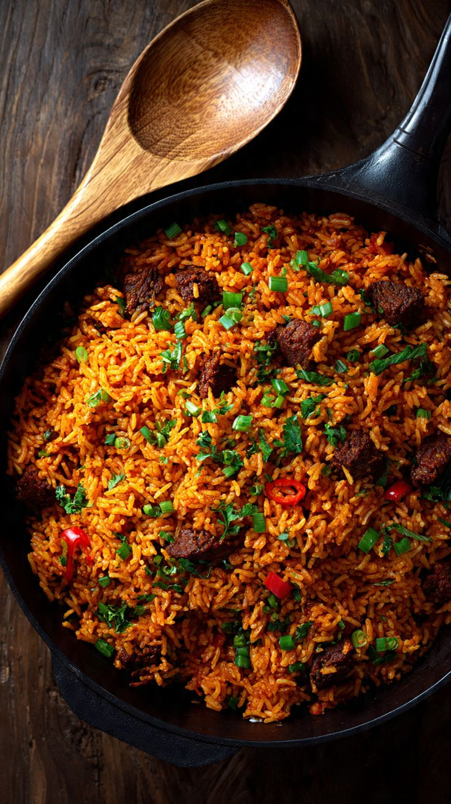

Rice Wolof

Description
Le riz au gras (ou "wolof" / "thiéboudienne"), un plat emblématique de la cuisine sénégalaise et ouest-africaine. Du riz cuit dans une sauce tomate riche et épicée, avec du poisson ou de la viande et des légumes, pour un résultat savoureux et coloré.
Ingredients
- 500g de riz
- 500g de poisson ou de viande (poulet/bœuf)
- 3 tomates fraîches
- 3 cuillères à soupe de concentré de tomate
- 1 oignon
- 2 gousses d'ail
- 1 poivron
- 1 carotte
- Sel, poivre, cube de bouillon, piment (selon le goût)
- Huile
Steps
- Faire revenir l'oignon et l'ail dans l'huile chaude.
- Ajouter la viande ou le poisson, faire dorer, puis réserver.
- Mixer les tomates fraîches avec le concentré de tomate, ajouter dans la marmite avec les épices, laisser mijoter.
- Ajouter les légumes (carotte, poivron) et un peu d'eau, laisser cuire.
- Ajouter le riz, mélanger, couvrir et laisser cuire à feu doux jusqu'à absorption complète du liquide.
- Remettre la viande ou le poisson dessus avant de servir.
Home